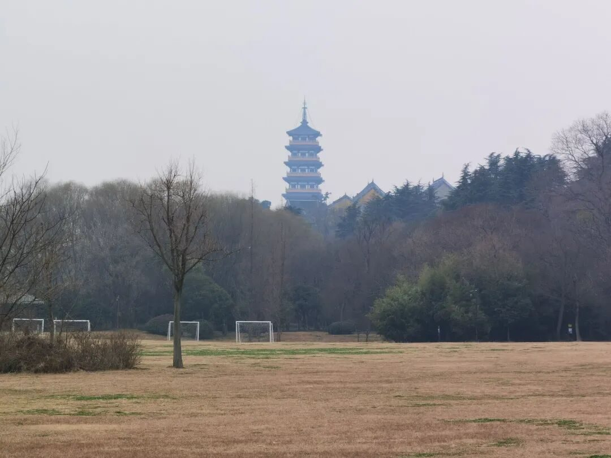
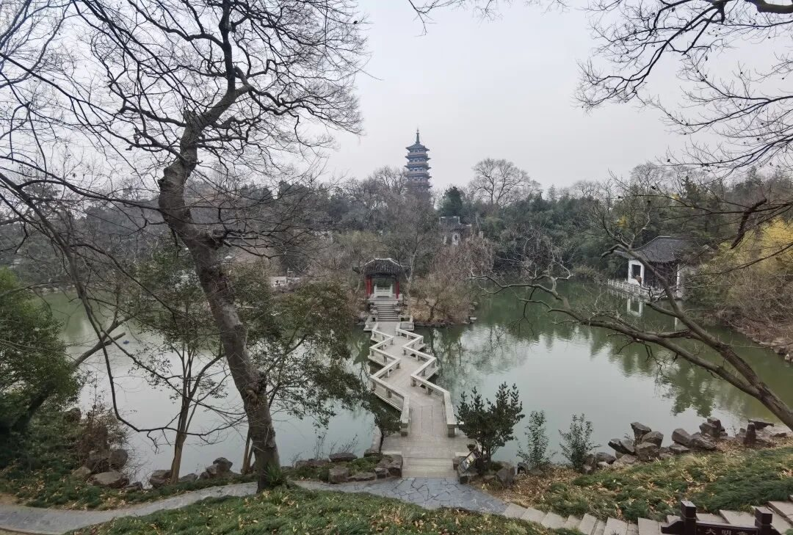

岁月静好，山水有情


文昌阁的钟声悠悠地传来，栖灵塔静静地伫立于平山堂，大运河的水缓缓地流过整个城市。

在扬州，大运河的水认识我，邗江里的鱼儿认识我，保障湖边的水鸟们认识我。

岁月静好
是这个城市的真实写照
若是让我用一个字来概括扬州，那便是——“静”。
岁月静好，是这个城市的真实写照。早晨的早茶馆里永远人满为患。但在熙熙攘攘的人群中，却感受不到任何的焦虑。街坊邻居们围在一个圆桌旁，桌上是热气腾腾的早茶，桌边是热情的人们在热烈地讲着话。讲到深情并茂处，却缓缓地端起茶杯，抿一口茶水，全然不急不忙。就算是那些孤独的年轻人，也是在小心地守护着这方静好，他们将吸管插入汤包，轻轻地吸吮里面的汤汁，慢慢地享受这缓缓流过的时光。在这座城市里，时光的流速仿佛也放慢了，在这个焦虑的时代里，扬州守住了属于自己的一方岁月静好。

山水有情
是生活在这座城市里人们的真实感受

若是让我用一个字来形容扬州，那么便是“情”。
山水有情。是生活在这座城市里人们的真实感受。漫步于宝应湖旁的湿地里，水草丰茂。白鹭在浅水滩里缓缓的踱步，丝毫不畏惧我的到来，仿佛正带着我在他的院内闲庭信步。水微微荡漾着，为我送来了一阵清爽的风，仿佛在迎接着我的到来。鱼儿则浮上水面，轻轻的在湖面上点起一道波纹，仿佛是作为主人的他们，在引领我走向深处。在保障湖畔悄悄地走着，感受着山水的关照，如置身于家中一般，山水有情，自在舒适。
岁月静好，山水有情。在这个焦虑孤独的时代里，扬州悄悄地守着时光里那小小的一隅，给焦虑的人们一片心灵的净土，给孤独的人们一个温暖的小家。
来源 | 行者无疆实践团
文字 | 朱华玮
排版 | 高懿玢
审核 | 温兆琪 朱华玮